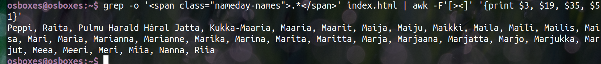
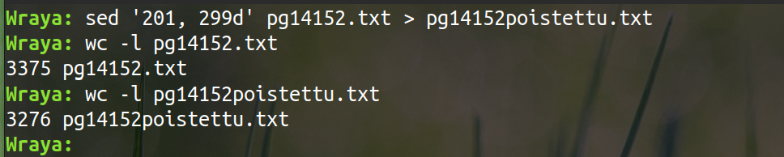
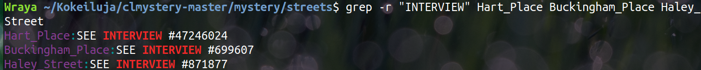
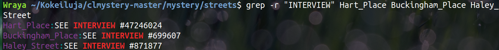
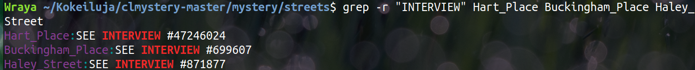

Lausekkeen luominen henkilötunnuksen etsimiseen oli todella haastavaa, sillä on niin paljon sääntöjä, jotka piti ottaa huomioon ja voi olla, että jokin jäi vielä huomiotta. Loin teksti-tiedostoon muutamia keksittyjä henkilötunnuksia ja ei-henkilötunnuksia. Sen jälkeen yritin hakea niitä ei henkilötunnusten joukosta. Hakulausekkeeseen piti määritellä päivämäärän kohdalle putkituksen avulla ehtoja, jotta hakuun tulisi vain 01-31 väliltä päivämääriä. Kuukauden kohdalla piti myös määritell tai-lausekkeita, jotta löytyisi vain ne, joissa oikea kuukausi 01-12. Vuoden kohdalle hyväksyin kaikki luvut 00-99 väliltä. Tässä toki nyt ongelma on se, että tulokseen tulisi nyt myös tulevia vuosilukua. Välimerkiksi hyväksyin -Aa, koska - tarkoittaa 1900-luvulla syntyneitä ja a-2000-luvulla syntyneitä ja ajattelin, että a voi olla isossa tai pienessä muodossa. Henkilötunnuksen loppuosassa kolme ensimmäistä voi olla mikä vaan numero, mutta viimeinen voi olla numero tai kirjain.
b) Sähköpostin etsiminen
Alkujaan tämä kuulosti helpolta, sillä materiaali-videossa oli esimerkki sähköpostin etsimisestä.
Ensimmäinen yritys toi liikaa vaihtoehtoja, sillä ilmeisesti *-merkki voi olla myös tyhjä. Toinen yritys oli jo parempi ja sain vain sähköpostiosoitteista, jotka olivat muotoa nimi.nimi@domain.domain.
Mutta tarkemmin katseltuani, tajusin, että tämä haku jätti tulostamatta kolme oikeanmuotoista sähköpostiosoitetta kahdelta eri riviltä: harjoiTusmateriaalina onni.opiskleija@sci.fi grepin ja SEDin käytössä. ja matti.meikä@suomi.fi & matti.meikä@finland.fi
Millään omalla yrityksellä on saanut näitä tulostumaan. Päätin ottaa chatGPT:n käyttöön, mutta hänenkään avulla en päässyt kovin paljoa pidemmällä, mutta sain yhden karkulaiset lisää tulostettua, mutta itse en tällaista lausetta olisi osannut muodostaa:
Loppujen osalta ChatGPT:kin luovutti ja yritti ehdottaa pythonilla ohjelmoimista...
Eli jostain syystä mitenkään en saanut tulostettua riviltä matti.meikä@suomi.fi & matti.meikä@finland.fi kumpaakaan sähköpostia, vaikka ovat oikean muotoisia...
En pystynyt antamaan asian olla ja ratkaisua piti yrittää edelleen. Googlen avulla löysin erilaisen version, jota kokeilla, mutta luonnollisesti sekään ei toiminut, vaan toi noita sähköpostiosoitteita, jotka eivät noudattaneet nimi.nimi@domain.domain -muotoa...
Puolen tunnin tekoälyn kanssa viilailun jälkeen chatGPT vihdoin sai minulle ratkaisun googlesta löydetyn version pohjalta tähän ongelmaan, mutta ei todellakaan ollut minun aivoilla ratkaistavissa...
Tämä oli todella haastava...
c) Vakiomuotoisen IP-osoitteen etsiminen
Hakukomennossa etsitään ensin kolmea numero-sarjaa, joissa voi olla 1-3 numeroa ja joka päättyy . ja viimeinen osassa etsitään numerosarjaa, jossa 1-3 numeroa ja jonka jälkeen ei tule mitään. Haku tulostaa koko rivin.
Tulostus vielä ilman muita tietoja riviltä
d) Tiedoston lataaminen ja "asianajaja", "poliisi" ja "lääkäri" etsiminen tiedostosta.
Ensimmäiset hakukomennot epäonnistuivat, kun ensimmäisessä haettiin väärästä tiedostosta ja tokasta jäi jälkimmäinen putkitus pois. Kolmas kerta toden sanoo ja se onnistui.
e) "Tohtori Jekyll" -sanan etsiminen ja löydettyjen sanojen lukumäärän laskeminen
Ensin testasin, Tohtori Jekyllin tulostamisen (ja nähdäkseni, kuinka monta kertaa tulostuu :D). Sen jälkeen virheellinen kokeilu Tohtori Jekyllin esiintymisen laskemiseksi, mutta seuraava onnistui. Eli Tohtori Jekyll esiintyy tiedostossa viisi kertaa.
f) Etsi rivit, jotka eivät sisällä "elämä", "ei" ja "kuolema" sekä tulosta rivinumerot riveistä, joilta nämä sanat löytyvät
Ensin hain rivin, jotka eivät sisällä "elämä", "ei" tai "kuolema" sanaa ja näitä oli aika paljon.
Sen jälkeen kokeilin hakea rivit, joilla nämä sanat esiintyy ja sen jälkeen vain rivinumerot näistä riveistä, joissa sanat esiintyvät.
Yritin yhdistää hakukomennot niin, että tulostaisi rivit, joissa kyseiset sanat eivät esiinnyt, ja samalla myös rivinumeron niistä riveistä, joissa sanat esiintyvät. Tämä ei minulta onnistunut, vaan kyseinen haku tulosti vain rivinumerot niistä, missä sanat esiintyvät, mutta ei niitä rivejä, joilla sanat eivät esiintyneet.
Omat aivot eivät vain kyenneet ratkaisemaan tätä yhdistämisongelmaa, jossa tulostuisi niin ne rivit, joissa sanat eivät esiinny ja rivinumerot niistä, joissa esiintyy.
Tekoälyn kanssa jumppaamalla tuli tällainen ratkaisu, jota en olisi kyllä itse pystynyt mitenkään keksimään ja en tiedä, toimiiko sekään ihan halutulla tavalla: ensin tulostuu rivit, joilla sanat ei esiinny ja näiden rivien jälkeen tulee vain rivinumerot niistä riveistä, joilla sanat ovat.
AWK
a) Etunimien ja puhelinnumeroiden tulostus AWK-työkalun avulla
Hetken aikaa kesti löytää ja ymmärtää, miten nimen saisi pilkottua palasiksi niin, että vain etunimi tulostuisi.
b) Henkilöiden nimi, katuosoite ja asuinmaa erotettuna sarkaimella sekä lista tulostettuna aakkosjärjestyksen mukaan
Listasta poistettu ensimmäinen rivi (Nimikerivi: First, Address) komennon osuudella NR != 1. Itseä ärsytti se, kun sarakkeet menivät ihan hassusti, sillä vaikka väleissä oli tabulaattorin verran tyhjää, niin sarakkeiden sisällön vaihtelevien pituuksien takia rivit olivat miten olivat.
Kun välit oli määritelty tabillä, niin järjestäminen sort -k3 komennolla onnistui, mutta näin ihmissilmään näyttää aika hirveältä lukea...
Seuraavia yrityksiä: ainakin välit sain niin, että miellyttävät omaa silmää enemmän. Mutta järkkääminen on haastavaa, vaikka netistä löytyi, että sort -k valinnalla saisi valittua sen sarakkeen, minkä mukaan järjestetään, niin ilmeisesti se kuitenkin "tunnistaa" sarakkeeksi aina välilyönnin jälkeen. Eli sort -k3, saan järkättyä sukunimen mukaan (kun kaikissa on etunimi ja keskimmäisen nimen kirjain), mutta koska osoitteet ovat hyvin vaihtelevia, niin tämä tapa ei toimi kovin paljoa pidemmälle (Trust me, kokeilin aika pitkälle ja tajusin, ettei vaan loppuvaiheessa missään vaiheessa täsmäisi...)
En keksinyt mitään keinoa ja tekoälynkään ehdotukset eivät toimineet...Vain laittamalla maan ensiksi saan järjestettyä maan mukaan...
Tulostuksen järjestäminen maan mukaan, niin että järjestettiin 70 merkin kohdalla (koska ensimmäisten sarakkaiden leveys on 30 ja 40 merkkiä, niin kolmas, eri maa-sarake alkaa merkistä 70. Ja tämä vihdoin toimi! :)
c) Mielipidekyselyn tulosten laskeminen: kuinka monta "kyllä" ja kuinka monta "ei" ääntä, esitettynä lukuina ja prosennteina.
Testailujen jälkeen sain jo aika hyvin laskettua ja tulostettua, mutta prosenttien tulostuksen asettelun kanssa haasteita ja miten saada vain muutaman desimaalin tarkkuudella..
Googlen ja tekoälyn avulla sain vihdoin myös prosenttiosuuden kauniisti tulostettua yhden desimaalin tarkkuudella, mutta en olisi itse osannut.
d) Helsingin Yliopiston almanakkasivuilta nimipäiväsankarien tulostus ilman HTML-tägejä.
Kokeilin erilaisia grep-hakuja, jotta pystyisin paikantamaan millaisten elementtien sisällä nimipäiviä voisi löytyä. Ja sitten miettimään, millä ihmeen hakukomennoilla saisi kohdennettua nameday-names-luokkiin ja saisi ne nimet sieltä tulostettua.
Malliratkaisun pohjalta kokeilua. Loin omasta index.html -tiedostosta ensin myös data.txt tiedoston. Mutta siitä huolimatta omassa tiedostossa on jotain, jonka vuoksi ei toimi.
Kokeilin muuttaa br-elementin tilalle nameday-names, jolla aikaisemmin olin saanut nimiä näkyville ja se toimi osittain, mutta haki myös paljon enemmän kuin vain nimet.
Ratkaisu, joka vaati ensi ntekoälyn ideointia ja sen jälkeen aika paljon manuaalista kokeilua kaikkien nimien tulostukseen saamiseksi ja mitkä sarakkeet sisälsivät html-elementtejä ja mitkä nimiä. Mutta onnistui lopulta.

SED
Loin kopion tiedostosta pg14152.txt, jolla tein harjoituksia. Ihan vain, että koska halusin pitää alkuperäisen vielä koskemattomana, ja voisin aina 100% varmuudella aloittaa alusta. Ja en uskaltanut luottaa, että on varmuuskopiot varmasti. :p
a) Etsi ja korvaa "lääkäri" sanalla "puoskari".
Haettu ensin lääkäri-sanat tiedostosta, sen jälkeen sedillä määritelty komento lääkäri-sanan vaihtamiseksi puoskari-sanalla ja muutosten tallentamiseksi suoraan tiedostoon ja sen jälkeen testattu vielä haulla, että toimiko.
b) Rivien, joilla esiintyy sana "maailma", poistaminen
Poistettu rivit, joissa esiintyy "maailma", mutta ei tallennettu tiedostoon. Joten ei tarkastusta tämän tehtävän kohdalla.
c) Hakeminen ja korvaaminen kolmella eri hakusanalla samalla komennolla
Haettu muutettavat sanat, tehty SEDillä komento kolmen eri sanan korvaamiseksi. Tallennettu muutokset tiedostoon, jotta muutosten onnistumisen voi tarkistaa.
d) Sanan "Enfield" etsiminen ja lainausmerkkien lisääminen sanan ympärille
Ensimmäinen yritys paljasti, ettei Enfield-sanojen ympäröiminen lainausmerkillä ollut niin simppeli, sillä unohdin, että suomen kielessä sanat taipuvat ja lainaismerkit eivät näytä kovin hyvältä sanan keskellä.
Googlailun ja erilaisten kokeilujen jälkeen löytyi onnistunut lause.
Tekstitiedostojen manipulointi
a) Kolmen tiedoston yhdistäminen yhdeksi.
Ensimmäinen kokeilu ei asettunut nätisti, sillä olin luonut tiedostot niin, että kaikissa tiedostoissa oli tiedot yhdellä rivillä. Kun muokkasin alkutiedostoja niin, että jokainen tieto on omalla rivillä, niin yhdistämisen jälkeen sisällön asettelu oli parempi.
b) Tiedoston pg14152 tutkiminen: kuinka monta riviä ja tiedoston jakaminen osiin.
Defaul-oletuksena on, että split-komento jakaa tiedoston osiin, niin, että jokaisessa osassa on tuhat riviä.
c) Tiedoston pg14152 jakaminen tiedostoihin, joissa jokaisessa 500 riviä
d) Rivien 200-300 välillä olevien rivien poistaminen

Murhamysteerin ratkaiseminen terminaalityökalujen avulla
Aloitettu murhamysteerin selvittäminen, sillä että haetaan poliisin havaitsemat vihjeet tiedostoista. Epäilty on pitkä mies ja rikospaikalta löytyi lompakko, jonka epäillään kuuluneen tappajalle. Lompakosta ei löydy nimeä, mutta löytyy jäsenkortit organisaatioille: AAA, Delta SkyMiles, kirjastoon ja Museoon.
Vertailtu eri jäsenyyksiä ja luotu ensin tiedostoja, joissa on on kahden eri yrityksen yhteiset jäsenet ja sitten näistä vielä luotu lista ihmisistä, jotka ovat jäseninä kaikissa neljässä yrityksesä (AAA, Delta SkyMiles, library ja Museum of Bash History). Tallennettu nämä henkilöt tiedostoon epaillyt.
Rikospaikan vihjeiden mukaan paikallisessa kahvilassa oli nainen, joka lähti vähän ennen ammuskelua. Naisen nimi oli mahdollisesti Annabel, hänellä oli vaalea tukka ja Uusiseelantilainen aksentti. Hän olisi mahdollinen todistaja. People-listalta löytyy neljä eri Annabel-nimistä henkilöä, joista yksi oli mies, joten hänet pystyi jättämään pois listalta.
Vihjeessä neuvottiin katsomaan head -komennolla osoitteita todistajien haastattelujen löytämiseksi. Ja tämän jälkeen etsin grepin avulla katu-tiedostoja, joissa oli INTERVIEW ja koska minulla oi tiedossa kolmen mahdollisen Annabelin osoite, niin vain näiden kolmen haastattelua lähdin hakemaan.

Todistajan lausunto
Etsitty rekkareita ja rekkareiden omistajien tiedot ja tallennettu ne vecehicle_owners-tiedostoon. Tallennettu tiedostoon epaillyt_omistajat rekkareiden omistajien nimet, jos omistajan pituus oli yli 6.
Verrattu epaillyt_omistajat -tiedostoa aikaisemmin luotuun tiedostoon epaillyt (joka koostui niistä henkilöistä, joilla oli kaikkien neljän organisaation jäsenyys). Näillä kahdella listalla oli kolme eri henkilöä ja etsitty heidän osoitetietojen perusteella heidän haastattelut.
Tarkistetaan, löytyykö Brian Boyerilta tai Matt Waiteltä myös toinen auto.
Ei löytynyt kummaltakaan autoa. Ja tarkistettu vielä solutions-komennolla, eikä kumpikaan ollut tekijä.
Palattu alkuun ja tajuttu, että rekisterinumeroiden kohdalla olen tehnyt hakulausekkeessa virheen.
Etsitty netistä vinkkiä, miten rajata rekisterihakua autoihin, jotka ovat sinisiä hondia ja joiden omistajan pituus on vähintään 6'0".
Mutta tämäkään ei auttanut... Tarkistin nämäkin solutions-komennolla varmuuden vuoksi, mutta ei onnannut.
Luovutan mysteerin kanssa. Minusta ei ole salapoliisiksi...
Tai pitänee joskun toiste kokeilla virkeämpien aivojen kanssa...
Jeps. Eli Jeremy Bowers OLI syyllinen, mutta olin kokeillut solutions-komentoa väärässä hakemistossa (en ollut lukenut solutions-ohjetta riittävän tarkasti..), jolloin antoi virheellisen tuloksen.


 
